Cette vidéo d'analyse prospective de *Pursuing AI* explore la contradiction saisissante entre les appels publics à la modération — initiés notamment par Dario Amodei — et l'accélération frénétique du secteur, marquée par des fuites massives concernant la prochaine génération de modèles de pointe (Claude Opus 5.2, Gemini 4, GPT-6 Soul et Grok 4.7). Le créateur décortique une série de benchmarks officieux et de "leaks" audacieux partagés sur les réseaux sociaux, illustrant un basculement technologique majeur : les intelligences artificielles quittent le terrain exclusif du texte et de l'image plane pour investir massivement le code d'interface complexe (SVG), la génération d'environnements 3D explorables et l'intégration logicielle profonde en milieu professionnel.
Sur le plan méthodologique, la vidéo adopte une approche comparative rigoureuse, confrontant les capacités émergentes des laboratoires rivaux à travers des tests pratiques similaires. Le créateur analyse étape par étape la génération d'interfaces graphiques interactives en code SVG, la création de mondes 3D stylisés à partir de prompts textuels avec un effort de réflexion élevé, ainsi que le déploiement d'agents autonomes pré-intégrés à des environnements CRM comme Salesforce. Chaque fuite est disséquée avec esprit critique, séparant le battage médiatique (*hype*) des ruptures techniques réelles, tout en contextualisant l'impact de ces innovations sur l'écosystème logiciel global.
Pour les créateurs de contenu, les réalisateurs et les professionnels de la vidéo par IA, ces avancées annoncent des perspectives révolutionnaires. La transition vers des modèles capables de produire des environnements 3D interactifs (comme l'île japonaise générée par Gemini 4 Pro) et des interfaces fonctionnelles en quelques minutes redéfinit les workflows de production virtuelle, de prototypage rapide et de design d'assets. En comprenant comment ces modèles s'interतयाent désormais directement aux outils de productivité et repoussent les limites des fenêtres contextuelles (jusqu'à 2 millions de tokens), les créateurs disposent d'une vision claire des outils de demain pour automatiser et enrichir leurs pipelines de création.
Après que Dario Amadei a appelé à ralentir le rythme du développement de l'IA, on pourrait penser que les choses commenceraient à se calmer. Mais d'une manière ou d'une autre, c'est l'inverse qui s'est produit. Nous assistons maintenant à des fuites et à des premiers signes de ce qui pourrait être certains des plus grands modèles à venir, notamment Claude Opus 5.2, Gemini 4, GPT-6 Soul, et bien plus encore.
Interface & Outils : Interface de démonstration interactive et simulation scientifique Isaac Lab / PhysX.
Contenu textuel & Code : Sur l'image 2 : "Made by Opus 5.2", "TEMPEST'S HEART", "A storm kept under glass", curseurs de contrôle de tempête et d'éclair. Sur l'image 3 : "SHARPA WAVE | PPO POLICY | t=12.47s", "Isaac Lab / PhysX trajectory | g=9.81 m/s2 | turns=+0.22 | episode=2 | drops=0".
Action / Démonstration : Présentation de rendus générés par IA et de simulations physiques de pointe illustrant les performances des nouveaux modèles.
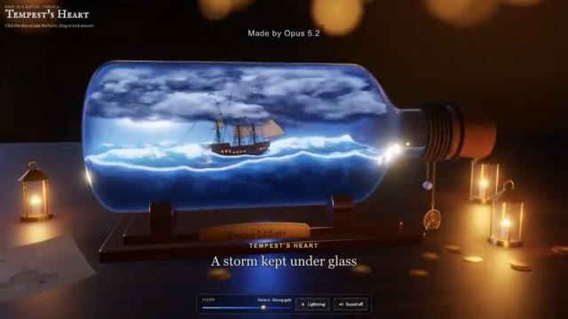
🔍 Agrandir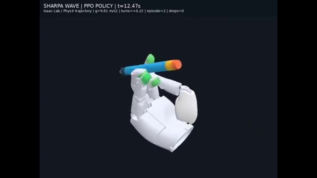
🔍 AgrandirEt certaines des choses qui fuites sont vraiment folles. Alors prenez vos snacks, installez-vous confortablement, et c'est parti. C'est Pursuing AI, et vous regardez The Research Report. Commençons par l'une des fuites les plus intéressantes. Un utilisateur sur X a testé GPT-6 Astra et le prochain Claude Opus 5.2 sur la même tâche.
Interface & Outils : Interface du réseau social X (Twitter) simulée / affichée sous forme de code SVG généré par IA.
Contenu textuel & Code : Texte affiché au-dessus : 'An SVG of a screenshot of X by GPT-6 Astra and opus 5.2'. Post de l'utilisateur @Haleeeemahhh avec le texte 'this user is ♀ and loves Ai building REDACTED' et la section 'What's happening'.
Action / Démonstration : Affichage à l'écran d'une génération SVG complexe reproduisant une interface de réseau social, illustrant les capacités des modèles d'IA mentionnés.
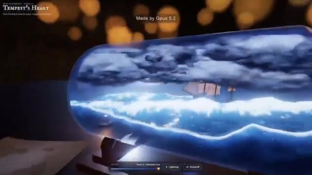
🔍 AgrandirRecréer une capture d'écran de X en utilisant SVG. Et il ne s'agit pas seulement de générer une image. Les modèles doivent essentiellement recréer l'interface en utilisant du code, en comprenant la mise en page, la typographie, les icônes, l'espacement, les couleurs et tous les minuscules détails qui composent l'interface. Et les deux résultats sont en fait assez impressionnants.
Interface & Outils : Captures d'écran comparatives d'interfaces X (Twitter) recréées en code SVG par des intelligences artificielles.
Contenu textuel & Code : Texte en haut à gauche : "An SVG of a screenshot of X by GPT-6 Astra and opus 5.2". Légendes des modèles : "Astra" et "Opus 5.2". Éléments d'interface X complets (barre latérale de navigation, flux de publications avec tweets, images, avatars et boutons, panneau "What's happening" et "Who to follow").
Action / Démonstration : Affichage comparatif des interfaces recréées par les deux modèles d'IA, avec un zoom sur les détails de l'interface pour l'image #1.
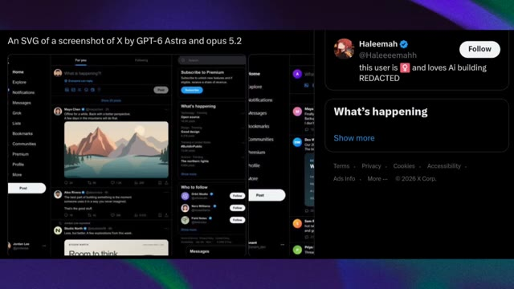
🔍 Agrandir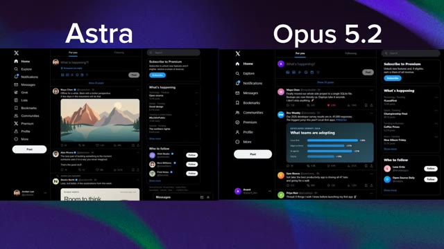
🔍 AgrandirOpus 5.2 produit une recréation vraiment soignée avec une mise en page épurée et des éléments visuels détaillés. Mais Astra adopte une approche légèrement différente. Sa sortie ressemble davantage à une expérience interactive complète avec des éléments plus structurés à l'intérieur du SVG généré. Donc, si nous jugeons le résultat visuel global, je donnerais en fait celui-ci à Astra.
Interface & Outils : Interface web simulant le réseau social X (anciennement Twitter) en mode sombre.
Contenu textuel & Code : Affichage de fils d'actualité, de barres de navigation latérales avec les menus Home, Explore, Notifications, Messages, et de panneaux de tendances "What's happening".
Action / Démonstration : Présentation comparative des interfaces générées par les modèles Opus 5.2 et Astra pour évaluer la qualité visuelle et les éléments structurés des graphiques SVG.
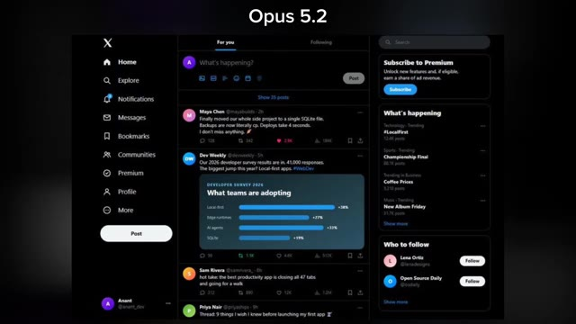
🔍 Agrandir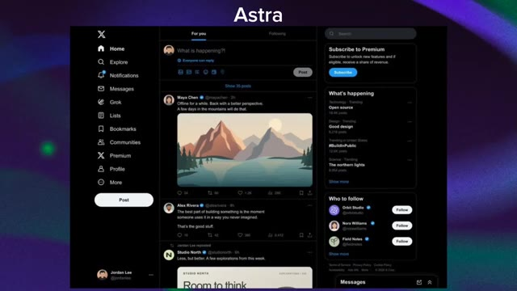
🔍 Agrandir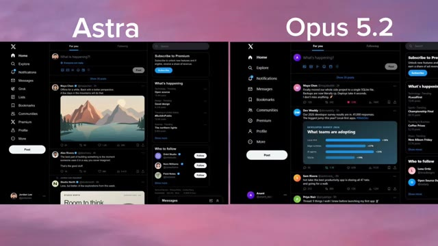
🔍 AgrandirLa composition semble plus solide, les éléments sont mieux organisés, et l'ensemble ressemble davantage à un produit fini plutôt qu'à un simple SVG animé. Donc sur ce test particulier, Astro l'emporte. Mais il y a un détail important ici. Opus 5.2 n'est même pas encore officiellement sorti. Et c'est là que les choses deviennent intéressantes, car les fuites concernant Opus 5.2 ne s'arrêtent pas aux fichiers SVG.
Interface & Outils : Interface utilisateur affichant une comparaison de maquettes ou de codes de l'application X (anciennement Twitter) en mode sombre.
Contenu textuel & Code : Texte à l'écran : "Astra" et "Opus 5.2" en titres, ainsi que la mention "An SVG of a screenshot of X by GPT-6 Astra and opus 5.2". Les interfaces affichent des fils d'actualité, des profils (Maya Chen, Dev Weekly, etc.), des graphiques statistiques et des panneaux latéraux.
Action / Démonstration : Comparaison visuelle côte à côte de deux rendus SVG différents issus de modèles d'IA pour évaluer la qualité de composition et l'organisation des éléments.
Un autre utilisateur, Salio, a partagé ce qu'il prétend être l'une des premières sorties d'Opus 5.2. Et cette fois, nous regardons une scène 3D. Le résultat montre un environnement stylisé avec une petite maison, des arbres, un immense champ et de multiples objets disséminés dans toute la scène. Ce qui a retenu mon attention, c'est la composition globale.
Interface & Outils : Interface de la plateforme X (anciennement Twitter) affichant un tweet et une vidéo intégrée.
Contenu textuel & Code : Texte du tweet : "Opus 5.2 First Output Leaked. The jump in visual quality is already noticeable better details, stronger composition. Anthropic is back". Profil de l'utilisateur Salio (@Mr_Salio) avec la mention "I track AI Models • AI News".
Action / Démonstration : Affichage d'un tweet sur les réseaux sociaux présentant un exemple de rendu 3D généré par une intelligence artificielle, suivi d'un zoom sur la vidéo.
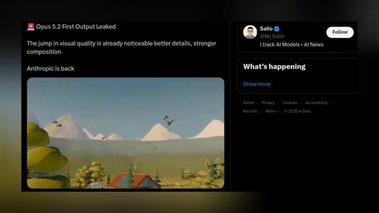
🔍 Agrandir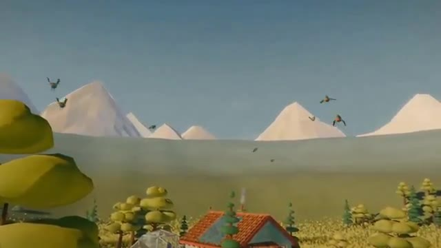
🔍 AgrandirAu lieu de simplement générer une image plate, le modèle semble créer un environnement 3D complet avec différents objets placés dans toute la scène pour construire un monde réel. La publication prétend qu'il y a déjà un saut notable dans la qualité visuelle, les détails et la composition. Maintenant, évidemment, un seul résultat divulgué ne suffit pas à prouver à quel point Opus 5.2 est réellement capable, mais si ce résultat provient véritablement d'Opus 5.2, Anthropic pourrait pousser ses capacités visuelles et 3D beaucoup plus loin que nous ne l'espérions.
Interface & Outils : Capture d'écran d'une publication sur le réseau social X (anciennement Twitter).
Contenu textuel & Code : Texte du tweet : "Opus 5.2 First Output Leaked. The jump in visual quality is already noticeable better details, stronger composition. Anthropic is back". Profil de Salio (@Mr_Salio) avec la mention "I track AI Models • AI News".
Action / Démonstration : Affichage à l'écran d'un rendu visuel 3D puis d'un tweet commentant ce même visuel de démonstration.
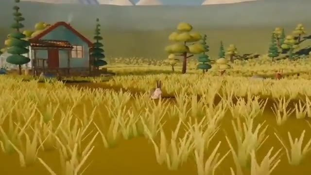
🔍 Agrandir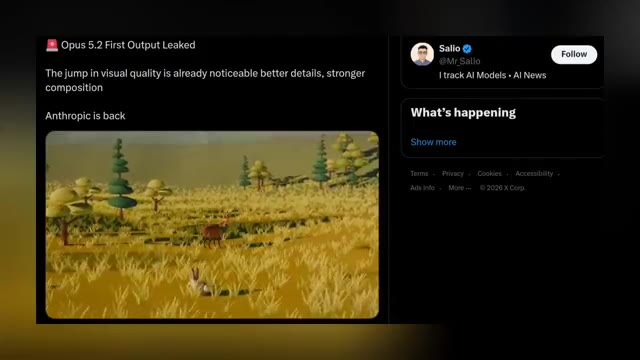
🔍 AgrandirEt puis Anthropic a fait un autre mouvement qui n'a rien à voir avec la 3D, mais qui pourrait en fait être beaucoup plus important pour les entreprises. Claude a maintenant ajouté Salesforce et Beta, intégrant les comptes, opportunités et pipelines Salesforce directement dans Claude. Et il ne s'agit pas d'une simple intégration basique. Claude est fourni avec 37 compétences de vente pré-intégrées. Vous pouvez donc préparer un appel commercial, examiner une transaction, créer un tableau de bord de pipeline ou travailler sur vos prévisions sans basculer constamment entre Claude et Salesforce. Et cela représente une tendance beaucoup plus large. L'IA passe de "réponds-moi à une question"
Interface & Outils : Interface de la plateforme X (anciennement Twitter) et interface de l'assistant IA Claude.
Contenu textuel & Code : Tweets de Salio (@Mr_Salio) et de Claude (@claudeai), textes sur l'intégration Salesforce ("Salesforce in Claude is now available in beta", "Build account plans from your Salesforce records", "Salesforce is connected", "Account Executive", "Sales Manager").
Action / Démonstration : Le créateur montre des publications sur les réseaux sociaux et des captures d'écran illustrant l'intégration de Salesforce dans l'assistant Claude.
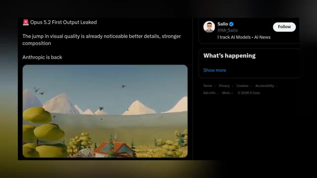
🔍 Agrandir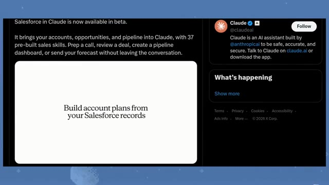
🔍 Agrandir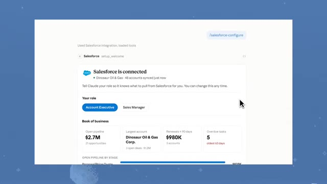
🔍 Agrandir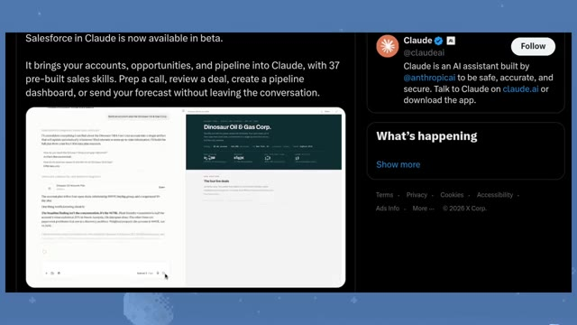
🔍 Agrandirpour me donner accès aux outils que j'utilise et m'aider réellement à faire le travail. C'est la direction que nous observons à travers toute l'industrie en ce moment. Les modèles d'IA deviennent une couche qui se superpose aux logiciels que les gens utilisent déjà. Et si ces modèles peuvent effectuer des actions de manière fiable à l'intérieur de ces outils, c'est là que la course aux agents IA devient vraiment intéressante.
Interface & Outils : Interface du réseau social X (Twitter) affichant un tweet du compte officiel de Claude (@claudeai).
Contenu textuel & Code : Texte du tweet de Claude : "Salesforce in Claude is now available in beta. It brings your accounts, opportunities, and pipeline into Claude, with 37 pre-built sales skills. Prep a call, review a deal, create a pipeline dashboard, or send your forecast without leaving the conversation." On y voit également une capture d'écran d'une conversation avec Claude intégrée à Salesforce.
Action / Démonstration : Affichage d'un article ou d'un tweet illustrant l'intégration d'un outil externe (Salesforce) directement au sein de l'interface de l'assistant IA Claude.
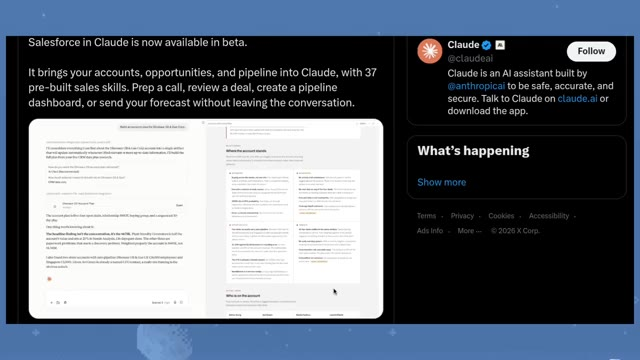
🔍 AgrandirMais alors qu'Anthropic étend Claude au lieu de travail, OpenAI pourrait bien préparer quelque chose de beaucoup plus grand. Car Sam Altman lui-même a récemment jeté de l'huile sur le feu. Il a publié que ça allait être énorme cette semaine, et a ajouté, et puis pour le Dev Day. C'était déjà intéressant. Mais ensuite, Tebow d'OpenAI a répondu, en disant que le niveau de lancements attendus cette semaine est quelque chose qu'on aurait pu attendre du Dev Day 2025.
Interface & Outils : Interface du réseau social X (anciennement Twitter).
Contenu textuel & Code : Tweets d'Anthropic/Claude et de Sam Altman (@sama) annonçant de nouveautés et des lancements importants ("big this week", "and then for devday").
Action / Démonstration : Affichage à l'écran de tweets et de messages textuels pour illustrer les annonces d'Anthropic et de Sam Altman sur les réseaux sociaux.
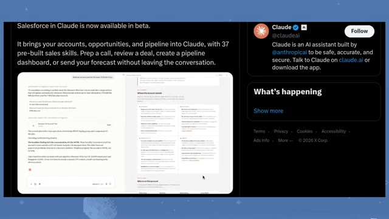
🔍 Agrandir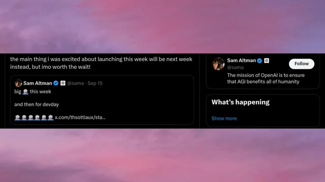
🔍 AgrandirAucun d'eux n'a réellement révélé ce qui arrive, mais le message est plutôt clair. OpenAI a quelque chose de gros de prévu, et apparemment cette semaine n'est que le début. Et maintenant, quand on combine cela avec toutes les fuites que nous voyons d'autres laboratoires, les choses commencent à devenir vraiment intéressantes. Parce que nous ne regardons peut-être pas seulement le lancement d'un modèle majeur, nous pourrions assister à l'arrivée de multiples modèles de pointe à peu près en même temps.
Interface & Outils : Interface de génération 3D et vidéo divisée en deux fenêtres (probablement des outils comme Claude/ChatGPT à gauche et une interface vidéo à droite).
Contenu textuel & Code : Texte du prompt à gauche concernant la création d'un modèle 3D de voiture de course de Formule 1. À droite, mention 'Made by Opus 5.2' et 'Tempest's Heart: A storm kept under glass'.
Action / Démonstration : Présentation visuelle de démonstrations technologiques de modèles d'IA générative (3D et vidéo).
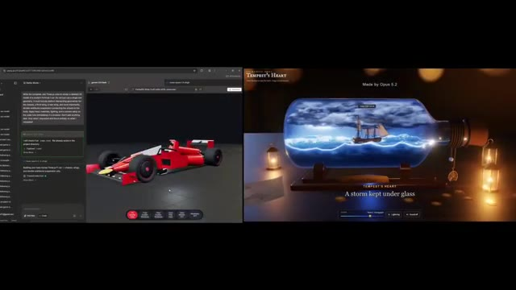
🔍 AgrandirEt c'est là qu'intervient la plus grande fuite. Car alors que tout le monde parle d'Opus 5.2 et de GPT-6, Google est peut-être déjà en train de tester Gemini 4 en interne. Une nouvelle fuite affirme que des points de contrôle (checkpoints) de Gemini 4 Pro ont commencé à apparaître en interne, le modèle portant apparemment le nom de code Argon. Et le premier résultat affirmé est absolument fou.
Interface & Outils : Navigateur web affichant une interface de développement à double volet (éditeur de code/modélisation 3D) et un réseau social (X/Twitter).
Contenu textuel & Code : Texte du tweet : « Gemini 4 Pro checkpoints have finally started appearing internally a few days ago. This is the first ever output from the model, internally codenamed "argon". It took 2.4 minutes on High thinking effort. It has a 256k token "output limit"... » et image d'un décor de pagode et de cerisiers en fleurs.
Action / Démonstration : Présentation visuelle de fuites d'informations et de comparaisons entre modèles d'IA (Opus 5.2 et Gemini 4 Pro).
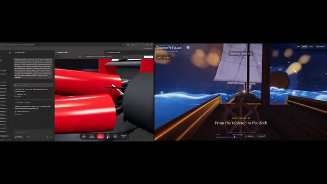
🔍 Agrandir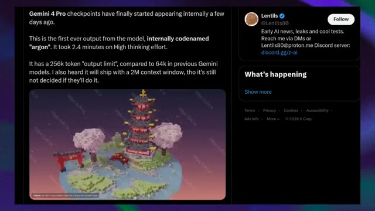
🔍 AgrandirAu lieu de générer une image normale, Gemini 4 Pro aurait créé un environnement 3D entièrement explorable. On parle d'une île japonaise de style Minecraft avec une immense pagode à plusieurs niveaux, des cerisiers en fleurs, des portails torii, de l'eau, du terrain et toutes sortes de petits détails environnementaux.
Interface & Outils : Visualiseur d'environnement 3D interactif avec des instructions de contrôle en bas à gauche ("Controls: Left Click + Drag to Rotate...").
Contenu textuel & Code : Affichage d'une île voxelisée/style Minecraft comprenant une pagode rouge et grise à plusieurs niveaux, deux cerisiers en fleurs roses, un portail torii rouge, un plan d'eau et un terrain vallonné. Des filigranes "https://zAI.is" sont visibles en diagonale.
Action / Démonstration : Présentation visuelle de l'environnement 3D explorable généré par l'IA.
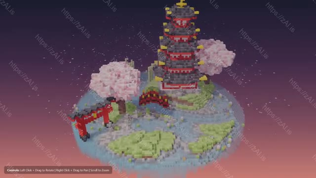
🔍 AgrandirSelon la fuite, le modèle a pris environ 2,4 minutes en utilisant un effort de réflexion élevé. Et il y a aussi des affirmations techniques assez folles associées à cette fuite. La publication affirme que Gemini 4 Pro a une limite de sortie de 256k tokens par rapport à 64k sur les modèles Gemini précédents. Et il y a aussi une affirmation selon laquelle Google envisage une fenêtre contextuelle de 2 millions de tokens, bien que la publication elle-même dise que ce n'est pas finalisé. Nous devons évidemment être prudents ici, ce sont des affirmations de fuite et non des spécifications confirmées de Gemini 4. Mais s'il s'agit vraiment d'un premier point de contrôle de Gemini 4 Pro, Google pourrait
Interface & Outils : Navigateur web affichant une publication sur les réseaux sociaux (X / Twitter) sur l'image 1, puis une application web de visualisation et d'édition de code SVG interactif sur l'image 2.
Contenu textuel & Code : Sur l'image 1 : Texte parlant de Gemini 4 Pro, du nom de code 'argon', du temps de 2,4 minutes avec 'High thinking effort', et d'une limite de sortie de 256k tokens. Sur l'image 2 : Titre 'Le Pélican Cycliste', boutons 'Inspect SVG Code', 'Copy SVG Code', 'Download .SVG' et lignes de code SVG en bas de l'écran.
Action / Démonstration : Le présentateur illustre ses propos sur la fuite de Gemini 4 Pro avec la publication X à l'écran, puis montre un exemple de réalisation ou d'interface technique connexe.
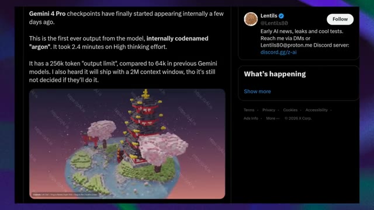
🔍 Agrandir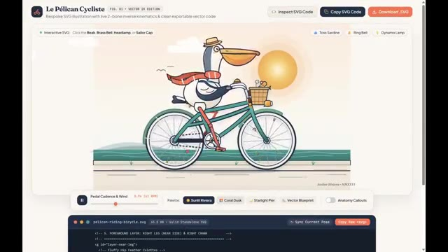
🔍 Agrandirpousser Gemini au-delà de la simple génération de contenu. Il pourrait évoluer vers la génération d'environnements interactifs complets. Et honnêtement, c'est beaucoup plus intéressant que de simplement faire de plus jolies images. Et maintenant, regardez la vue d'ensemble. Un utilisateur de 1x appelle déjà cela une semaine de lancement, Gemini 4, Grok 4.7, Opus 5.2, la famille GPT-6, et plusieurs modèles chinois. Et puis il y a GPT-6 Sol. Le post affirme que Sol pourrait être bien meilleur que tout le reste tout en étant moins cher,
Interface & Outils : Navigateur web affichant une application interactive vectorielle SVG (« Le Pélican Cycliste ») et une interface de réseau social (X / Twitter).
Contenu textuel & Code : Texte affiché sur les images 1 et 2 : « Le Pélican Cycliste » FIG. 01 VECTOR 1K EDITION, « Inspect SVG Code », « Copy SVG Code », « Download .SVG ». Texte de la publication Twitter sur l'image 3 : « Happy Launch Week, it's gonna be crazy week ever as we are expecting alot, > gemini 4, > grok 4.7, > opus 5.2, > gpt 6 family, > few chinese models. I expect 6 sol to be way better then anything and cheaper so everyone can use, which one are you most excited for? » avec le profil de JAZII (@notjazii).
Action / Démonstration : Affichage d'une illustration vectorielle interactive et d'une publication sur les réseaux sociaux évoquant les lancements majeurs de modèles d'intelligence artificielle.
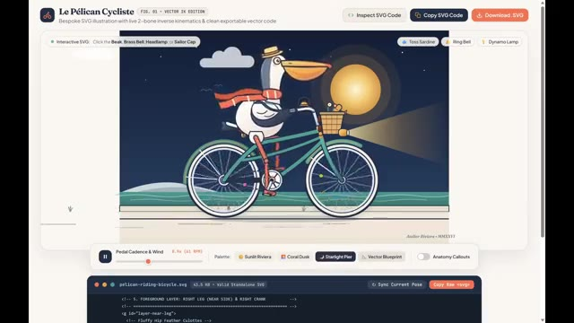
🔍 Agrandir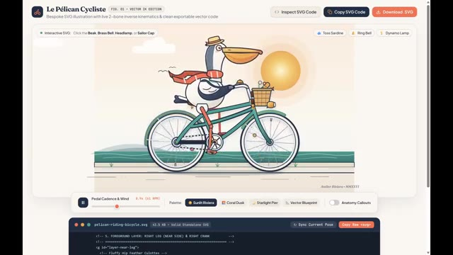
🔍 Agrandir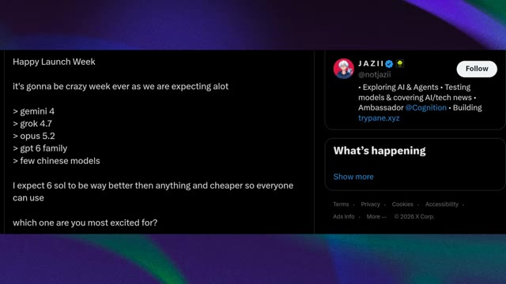
🔍 Agrandirce qui le rend potentiellement accessible à un bien plus grand nombre de personnes. Encore une fois, nous devons être prudents. Ce sont des attentes et des fuites, pas des spécifications confirmées ni des annonces de lancement. Mais c'est précisément ce qui rend ce moment si intéressant. Parce qu'il y a tout juste quelques jours, nous parlions de Dario Amodei demandant à l'industrie de l'IA de ralentir. Et maintenant, nous envisageons potentiellement Opus 5.2, Gemini 4, GPT-6, Grok 4.7, de nouveaux modèles chinois, de nouveaux agents IA, et potentiellement toute une vague de nouveaux produits. Donc, au lieu que le développement de l'IA ne ralentisse
Interface & Outils : Navigateur web affichant une publication sur le réseau social X (Twitter) et interface de présentation comparative de modèles d'IA avec illustrations de stations lunaires animées.
Contenu textuel & Code : Texte du tweet : "Happy Launch Week... it's gonna be crazy week ever as we are expecting alot > gemini 4 > grok 4.7 > opus 5.2 > gpt 6 family > few chinese models". Prompt visible en bas de l'image 2 : "Generate a richly animated SVG of a whimsical lunar parcel station...".
Action / Démonstration : Affichage successif des prédictions de sorties de modèles d'IA sur les réseaux sociaux et démonstration comparative des rendus graphiques générés par Opus 5.2 et GPT-6 Astra.
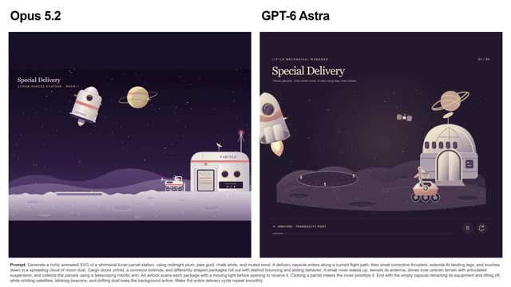
🔍 Agrandir...en bas, on dirait que tout le monde appuie sur l'accélérateur. Et si ne serait-ce que la moitié de ces fuites s'avèrent réelles, les prochaines semaines pourraient être absolument folles. Alors que vous attendiez GPT-6, Gemini 4, Opus 5.2, Grok 4.7, ou l'un des modèles chinois, il y a beaucoup à observer. Et je testerai ces modèles, je décortiquerai les sorties, et je séparerai les vraies capacités du battage médiatique.
Interface & Outils : Interface de démonstration interactive de modèles d'IA (Opus 5.2 et GPT-6 Astra), affichant des visualisations de stations spatiales animées et des environnements interactifs en 3D à la première personne avec commandes de navigation (barre de navigation, réglage de tempête, contrôles de voilure).
Contenu textuel & Code : Textes visibles : "Opus 5.2", "GPT-6 Astra", "Special Delivery", "LUNAR PARCEL STATION - DOCK 7", "LITTLE MECHANICAL WONDERS", "ROVER 03 - IN TRANSIT", prompt complet en bas de l'image 1 commençant par "Prompt: Generate a richly animated SVG of a whimsical lunar parcel station...", "Tempest's Heart", "Made by Opus 5.2", "TAKE THE HELM / From the tabletop to the deck", indicateurs de cap (067°, 6.0 KN / 039°, 3.4 KN), options de navigation (Reefed, Half sail, Full sail, Leave the helm), curseur de tempête ("STORM / Force 9 - Strong gale"), boutons "Lightning" et "Sound off".
Action / Démonstration : Présentation de démonstrations interactives de code/génération d'IA (animation vectorielle complexe pour Opus 5.2 et GPT-6 Astra) puis navigation interactive en vue subjective (première personne) à bord d'un navire virtuel avec des commandes de simulation météo et de voilure.
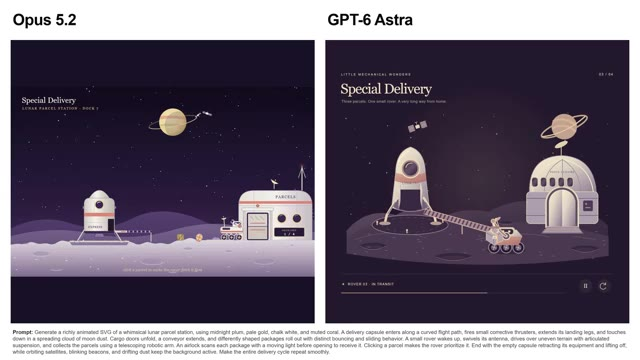
🔍 Agrandir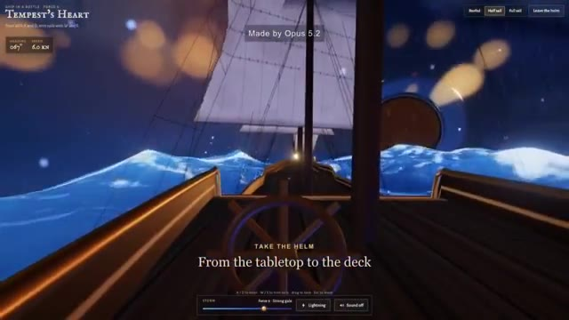
🔍 Agrandir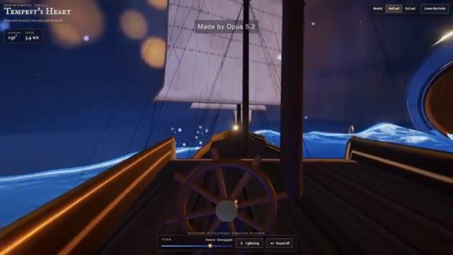
🔍 AgrandirSi vous avez apprécié ce rapport de recherche, abonnez-vous à Pursuing AI pour ne pas rater les prochaines vidéos. C'était Pursuing AI, et je vous dis à la prochaine.
Interface & Outils : Interface utilisateur de simulation interactive ou d'application web de navigation avec des commandes de voile (Reefed, Half sail, Full sail), un indicateur de cap (Heading) et de vitesse (KN), ainsi qu'une barre de contrôle de tempête.
Contenu textuel & Code : Texte affiché : "SHIP IN A BOTTLE - FORCE 6", "TEMPEST'S HEART", "Steer with A and D, trim sails with W and S", "Made by Opus 5.2", "FULL SAIL", "Watch the sails catch the wind", ainsi que des options de contrôle météo (Storm, Force 9 - Strong gale, Lightning, Sound off).
Action / Démonstration : Visualisation d'une simulation de navigation interactive sur un bateau naviguant sur une mer agitée sous un ciel nocturne orageux.
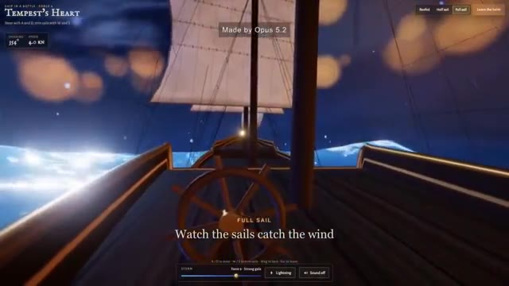
🔍 Agrandir